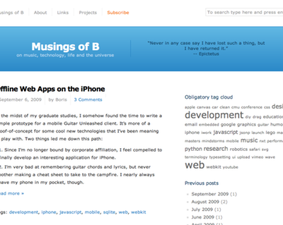
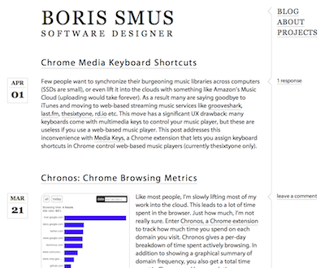

New Design
Since starting this site, I've been using a lightly tweaked version of the ClockWorkAir theme. The old design featured a prominent quote in prime screen real estate and a tag cloud in the upper sidebar. A blue title bar, reminiscent of the default wordpress theme, graced the blog header. The main text was small and there was hardly enough room to place images in the left margin. Here was my old blog design:

As I had hoped, the design class I'm taking at CMU gave me some good ideas. Here's my new blog design. I'm much happier with it than with the former look, but still have a backlog of things to tweak. My design was inspired by several people's web logs, which bring together form and function in a way which appeals to me. Please give me constructive feedback on the new design if you have time. I will release the wordpress theme if anyone wants it — I just haven't had time to bundle it yet. Here is my new blog design:

As of this month it's been a year since my first blog post. Surprisingly, I've been writing one to two blog entries per month and hope to keep my musings flowing at approximately the same rate in the future. It's very rewarding as a writer to have a steady flow of visitors, some recurring readership, and even the odd discussion here or there. Thank you all.